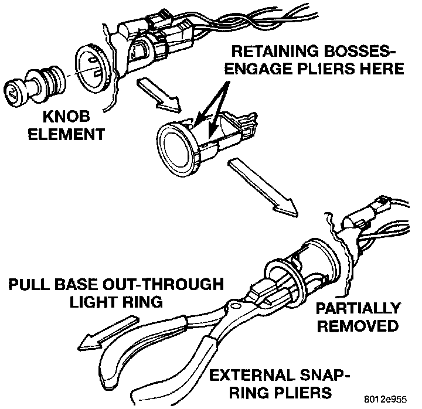

Cigarette Lighter: Service and Repair
REMOVALWARNING: ON VEHICLES EQUIPPED WITH AIRBAGS, REFER TO AIR BAGS AND SEAT BELTS/AIR BAGS BEFORE ATTEMPTING STEERING WHEEL, STEERING COLUMN, OR INSTRUMENT PANEL COMPONENT DIAGNOSIS OR SERVICE. FAILURE TO TAKE THE PROPER PRECAUTIONS COULD RESULT IN ACCIDENTAL AIRBAG DEPLOYMENT AND POSSIBLE PERSONAL INJURY.
1. Disconnect and isolate the battery negative cable.
2. Pull the cigar lighter knob and element out of the cigar lighter base.
Cigar Lighter Remove/Install:

3. Look inside the cigar lighter base and note the position of the retaining bosses that secure the unit to the light ring/retainer in the instrument panel center bezel.
4. Insert a pair of external snap ring pliers into the cigar lighter base and engage the tips of the pliers with the retaining bosses.
5. Squeeze the pliers to disengage the retaining bosses from the base, and using a gentle rocking motion pull the pliers and the cigar lighter base out of the light ring/retainer.
6. Remove the pliers from the cigar lighter base and unplug the wire harness connector.
7. Remove the cigar lighter light ring/retainer from the instrument panel center bezel and unplug the wire harness connector.
8. Reverse the removal procedures to install.